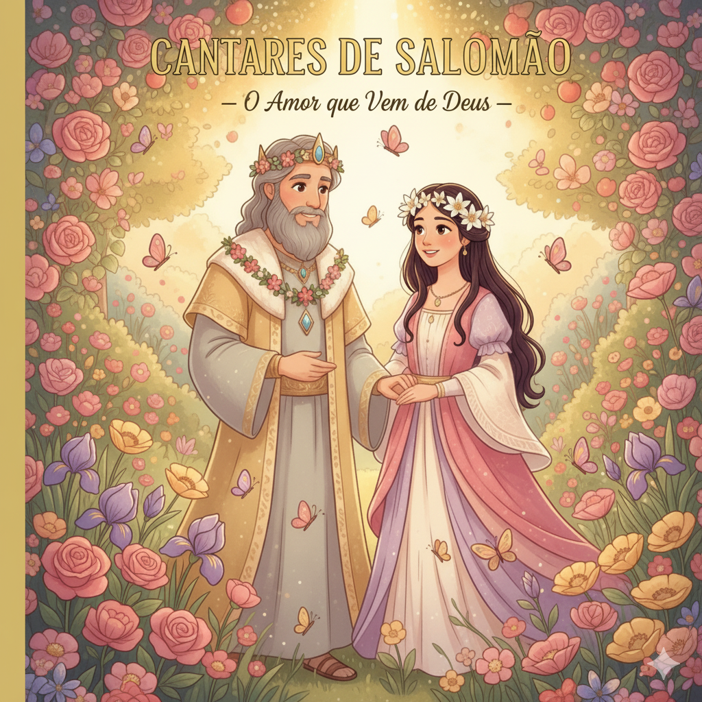
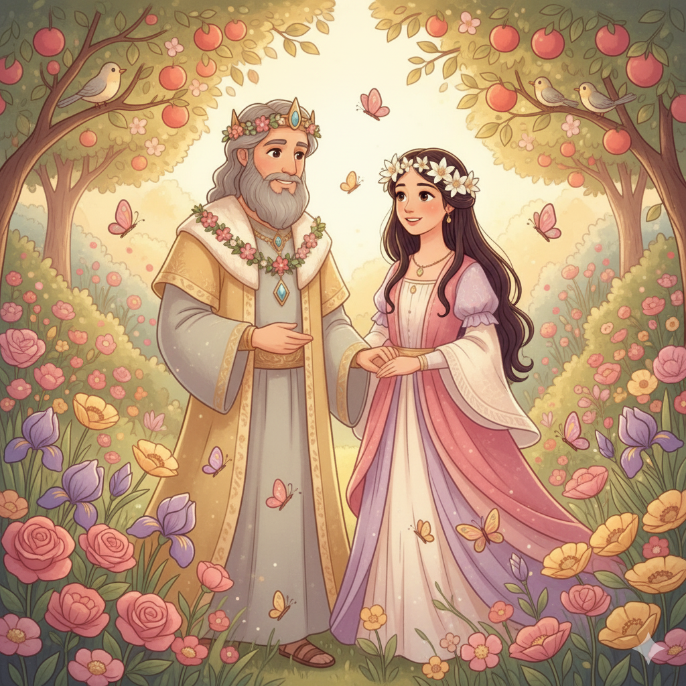
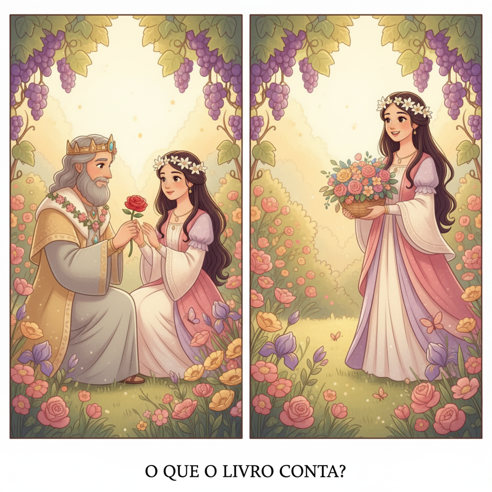
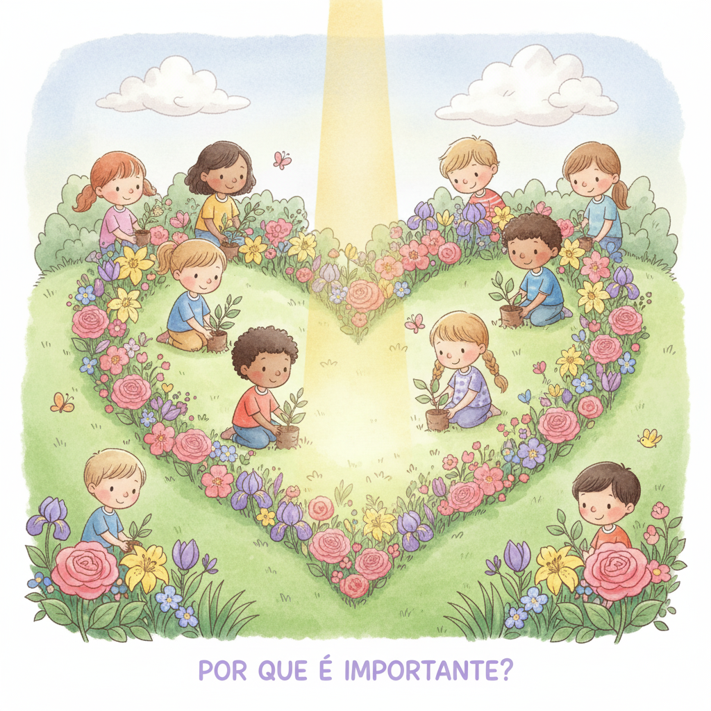

O Maior de Todos os Cânticos — Um Resumo Visual para Crianças
Cantares é um poema cheio de beleza e emoção,
Mostrando que o amor é bênção do coração.
Deus criou o amor puro, verdadeiro e leal,
Um presente precioso — algo muito especial!
O amor não é só sentimento passageiro,
É dom de Deus, profundo e sincero!
📖 Cantares 8:7 — "As muitas águas não poderiam apagar este amor; os rios não o submergiriam."
O livro mostra um amor cheio de cuidado e respeito,
Com carinho e amizade — tudo muito perfeito!
Não é egoísta, não busca apenas prazer,
Mas se preocupa com o bem de quem quer!
O amor verdadeiro cuida, protege e espera,
Ele valoriza, honra e nunca desespera!
📖 Cantares 2:16 — "O meu amado é meu e eu sou dele."
O livro diz que o amor é forte, muito forte,
Forte como a morte — nada pode cortá-lo à sorte!
É chama que nunca se apaga nem se vai,
Nem a tempestade nem o rio o desfaz!
O amor que vem de Deus resiste às tormentas,
Permanece fiel mesmo nas horas mais lentas!
📖 Cantares 8:6 — "O amor é forte como a morte... as suas brasas são brasas de fogo, a própria chama do Senhor."
💝
"O amor é forte como a morte... as muitas águas não poderiam apagar este amor."
Cantares 8:6-7
Este é um dos versículos mais bonitos da Bíblia! Ele diz que o amor verdadeiro — que vem de Deus — não some, não se apaga e não pode ser destruído por nada. Isso vale para o amor de Deus por você também!
Salomão é o autor do livro e o amado do poema. Ele usa palavras belíssimas para elogiar a sulamita — os campos, as flores e os animais do campo servem de metáforas para o amor que sente. Um rei poderoso que se rende ao amor!
📖 Leia na Bíblia — Cantares 1:2
"Beije-me com os beijos de sua boca, porque melhor é o teu amor do que o vinho."
A sulamita era uma jovem simples do campo — trabalhava sob o sol, cuidava das vinhas. Mesmo assim, é descrita com uma beleza que vem de dentro: ela é forte, confiante, fiel e apaixonada. Deus valoriza a beleza de coração!
📖 Leia na Bíblia — Cantares 1:5
"Eu sou morena, mas formosa, ó filhas de Jerusalém."
Um grupo de jovens que aparece ao longo do livro como um coro — elas fazem perguntas, admiram o casal e testemunham o amor. Elas representam todos nós, que observamos e aprendemos sobre o amor verdadeiro!
📖 Leia na Bíblia — Cantares 3:11
"Saí e vede, ó filhas de Sião, o rei Salomão com a coroa com que sua mãe o coroou no dia do seu casamento."


📖 Leia em casa!
Cantares tem 8 capítulos de poesia pura. O capítulo 8 tem o clímax mais famoso — sobre a força do amor!
🌅 O Namoro — Admiração e Saudade
Os capítulos 1-3 mostram a admiração mútua, a saudade da presença um do outro e o desejo de se estar juntos. O amor começa com apreciação genuína e cuidado!
📖 Cantares 2:3-4 — "Ele me conduziu à casa do banquete, e o seu estandarte sobre mim é o amor."
💍 O Casamento — Celebração e Compromisso
Os capítulos 4-5 descrevem o casamento e a beleza da entrega total um ao outro. O amor de Cantares é comprometido — não é passageiro. Inclui fidelidade e dedicação!
📖 Cantares 4:9 — "Roubaste o meu coração, minha irmã, noiva minha."
🔥 A Maturidade — Amor que Resiste a Tudo
Os capítulos 6-8 mostram um amor que passa por desafios, dúvidas e distâncias — e sobrevive! O amor maduro é provado nas dificuldades e se torna ainda mais forte!
📖 Cantares 8:6 — "O amor é forte como a morte... a própria chama do Senhor."
Cantares mostra que o amor entre marido e mulher é um presente sagrado de Deus — tão valioso que merece um livro inteiro na Bíblia! Deus não tem vergonha do amor — Ele o criou e o abençoa!
📖 Cantares 8:7
"As muitas águas não poderiam apagar este amor; os rios não o submergiriam."
Três vezes no livro, a sulamita diz: "não desperteis o amor antes do tempo" (Ct 2:7). Isso ensina que o amor verdadeiro não tem pressa — ele aguarda o momento certo de Deus!
📖 Cantares 2:7
"Conjuro-vos... que não desperteis nem exciteis o amor antes que ele queira."
Na Bíblia, a relação entre marido e esposa é imagem do amor de Cristo pela Igreja (Ef 5:25-27). Jesus é o Noivo que ama Sua noiva — a Igreja — com amor perfeito, fiel e sacrificial. Cantares é uma prévia desse amor eterno!

Cantares existe para dizer que o amor é sagrado e belo — digno de ser cantado, celebrado e guardado com cuidado. Não é algo envergonhoso, mas um presente precioso que Deus deu à humanidade desde o Éden!
📖 Cantares 1:4
"O rei me introduziu nas suas câmaras... com razão te amam."
O livro ensina que o amor puro é o mais poderoso e duradouro. A sulamita guarda seu coração com cuidado, espera o tempo certo e só então entrega tudo. Pureza não é fraqueza — é força!
📖 Cantares 4:12
"Jardim fechado és tu, minha irmã, noiva minha; jardim fechado, fonte selada."
🌟 Lição Principal: O amor verdadeiro vem de Deus, imita o amor de Deus e aponta para o amor de Jesus pela Sua Igreja — eterno, fiel e inquebrantável!
🎵 "Cantares dos Cantares" é um superlativo hebraico que significa "O Maior de Todos os Cânticos"! Assim como "Rei dos Reis" significa o maior rei, "Cantares dos Cantares" é a mais linda de todas as canções!
✡️ Judeus lêem Cantares na Páscoa: Os judeus recitam este livro na festa da Páscoa — como símbolo do amor de Deus pelo povo de Israel. Eles enxergam o amado como Deus e a amada como Israel!
🌹 Deus não é mencionado diretamente em Cantares — é um dos únicos livros assim. Mas o amor descrito aponta claramente para Ele. A expressão "chama do Senhor" em Ct 8:6 é uma das poucas referências diretas a Deus!
Converse com sua família, turma ou professor sobre essas perguntas!
💝
Cantares mostra que Deus criou o amor e o considera belo e sagrado. Como você demonstra amor pela sua família hoje? O que você poderia fazer diferente para mostrar mais carinho?
🌷
A sulamita repetiu: "não desperteis o amor antes do tempo." Por que você acha que Deus quer que a gente espere o momento certo para certas coisas? O que de bom acontece quando a gente aprende a esperar?
✝️
Cantares aponta para o amor de Jesus pela Igreja. Como você descreveria o amor de Jesus por você? Em que momento da sua vida você mais sentiu que Jesus estava cuidando de você com amor?
Escolha um desafio (ou faça os três!) e seja um explorador da Bíblia!
📖
Leia em voz alta os versículos 6 e 7 do capítulo 8 — o clímax mais famoso do livro. Depois converse com alguém da família: o que mais chamou sua atenção sobre esse amor forte como a morte?
💌
Escreva uma carta ou bilhete para alguém que você ama — pode ser para pai, mãe, irmão ou amigo. Use palavras gentis de agradecimento, como Salomão fez com a sulamita!
🌸
Por 3 dias seguidos, faça um ato de carinho espontâneo por cada pessoa da sua família — um abraço, ajudar sem que peçam, um elogio genuíno. Amor é ação, não só sentimento!
Trilho Kids | Desenvolvido com ❤️ para crianças © 2025